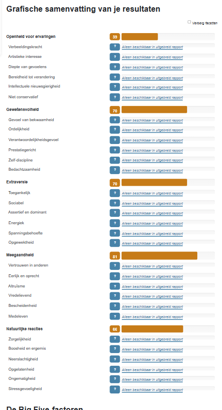

Les 2 - Persoonlijkheidstest
Big 5 Persoonlijkheidstest
Ik ben niet verbaasd over de resultaten die eruit zijn gekomen. Ik zie mezelf wel terug in de testuitslag.
Reflectie
Extraversie
Hoewel ik sociaal en vriendelijk ben, merk ik dat ik niet altijd de leiding durf te nemen. Bijvoorbeeld tijdens een klasdiscussie durfde ik mijn idee pas te delen nadat anderen hun mening hadden gegeven. Ik werk graag samen en voel me op mijn gemak in een groep, maar proactief opstaan als leider doe ik minder vaak.
Natuurlijke reacties
Tijdens een recente groepspresentatie merkte ik dat mijn zenuwen redelijk onder controle waren en mijn bijdrage goed kon uitvoeren. Toch bleef ik achteraf nadenken over wat ik anders had kunnen zeggen of doen, wat aantoont dat ik soms geneigd ben tot piekeren, ook al beïnvloedt dit mijn prestaties niet direct.
Ontwikkelpunten
Extraversie: Ik wil dit graag verbeteren. Tijdens projecten merk ik dat ik mijn eigen mening niet altijd geef, en ik krijg vaak de tip van medestudenten om actiever mijn ideeën te delen. Soms voel ik me niet gehoord als ik mijn mening niet uit, en ik wil leren om dit beter te doen.
Caluwé-test
Ik vond het een leuke, maar ook lastige test. Het verdelen van de 8 punten over de 5 opties per vraag was soms moeilijk. Soms dacht ik dat alle opties gelijk waren, maar dan kregen ze gemiddeld 1 of 2 punten.
Ik was niet zo verbaasd dat mijn hoogste score blauw was. Dit past goed bij hoe ik veranderingen bekijk: analytisch, planmatig en met aandacht voor een goed doordachte uitvoering. Ik merk dat ik het prettig vind om eerst informatie te verzamelen, oplossingen te onderzoeken en een stappenplan te maken voordat ik iets in praktijk breng.
Bijvoorbeeld, tijdens een groepsproject op school heb ik eerst alle mogelijkheden onderzocht en een planning gemaakt, zodat we efficiënt konden werken en het project soepel verliep. Bij dit semester bijvoorbeeld werkte we heel anders want ik werkte vorig jaar nooit met een steppingstone. Het was nieuw voor mij, dus ik ging juist onderzoeken en vragen stellen aan andere klasgenoten/docenten. Zo wist ik hoe ik met een steppingstone moest werken.
Eerste werkdag gevoel
Mijn eerste dag na mijn opleiding zal naar mijn gevoel heel anders voelen. Want dan ben ik geen student meer maar gewoon een programmeur. Het voelt dan een beetje raar omdat ik niet meer naar een HC hoef of toetsen moet maken. Gelukkig begint het echte werk in een functie waar ik mijn skills kan gebruiken en uitbreiden. Ik word ook blij om eindelijk fatsoenlijk geld te verdienen.
Mijn 5 tips voor mijn eerste werkdag
- Wees jezelf
- Als je hulp nodig hebt, vraag het gewoon; wees niet bang
- Maak nieuwe vrienden bij je baan
- Praat duidelijk
Gele veranderaar
Om een gele veranderaar mee te krijgen, betrek je hen bij beslissingen en laat je zien dat hun mening telt. Leg uit hoe de verandering voordelen oplevert voor iedereen en geef hun ruimte om mee te denken. Zo voelen ze zich gehoord en werken ze graag mee.